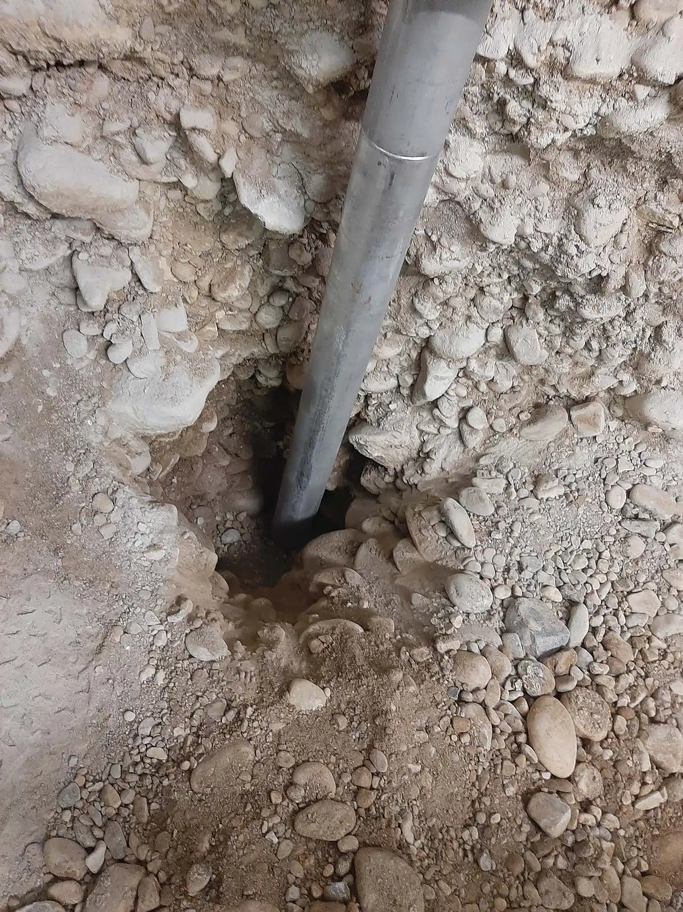
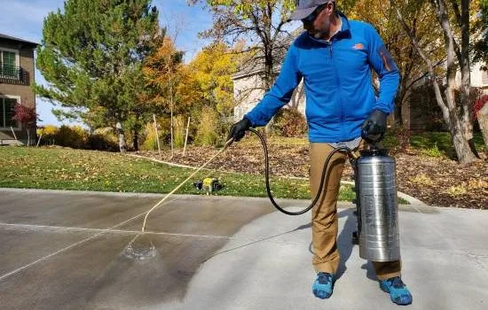
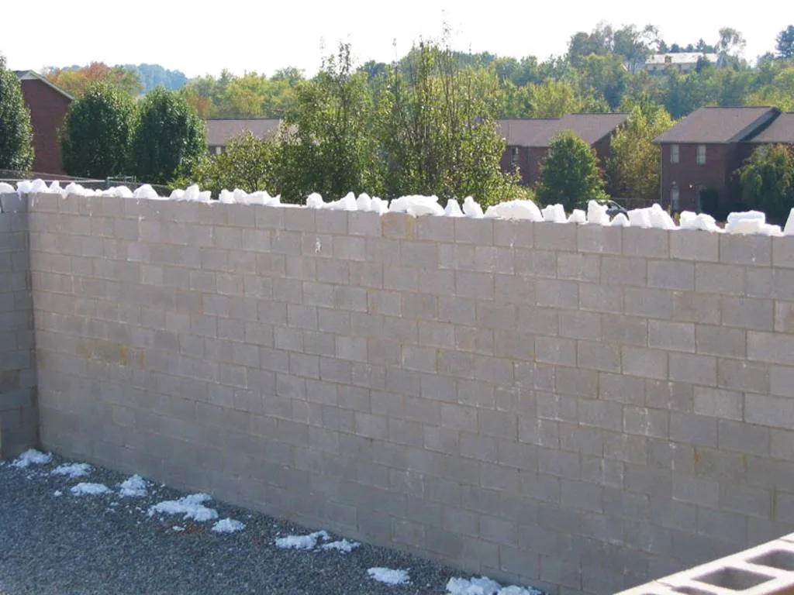
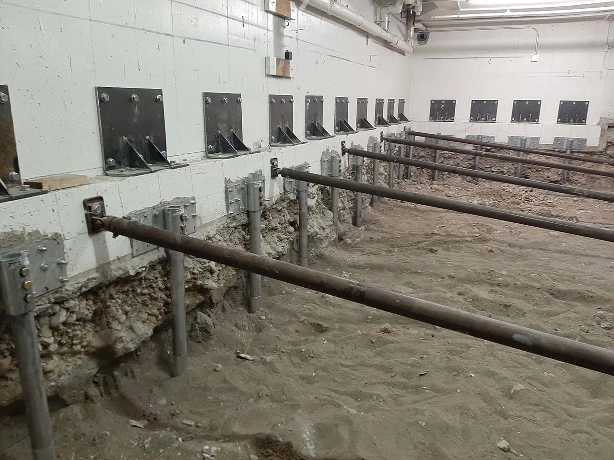
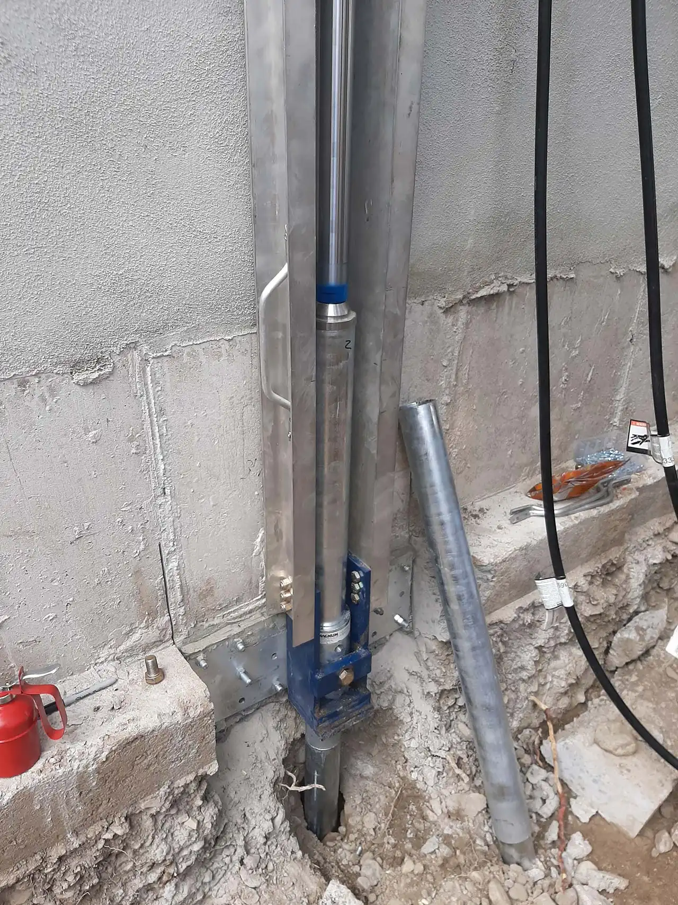
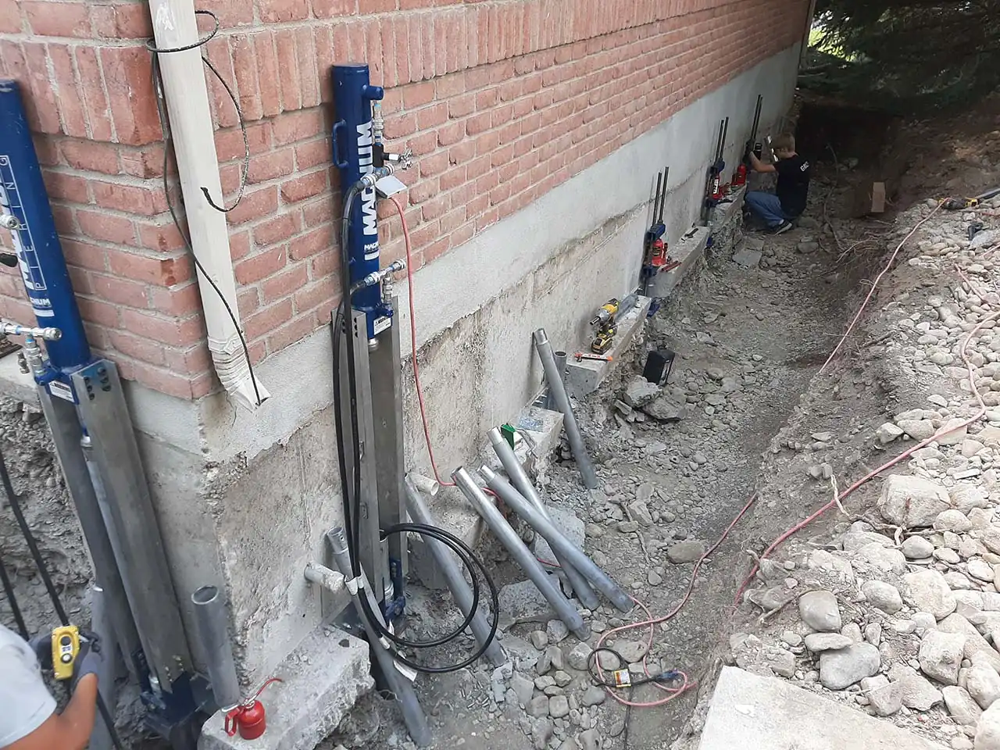
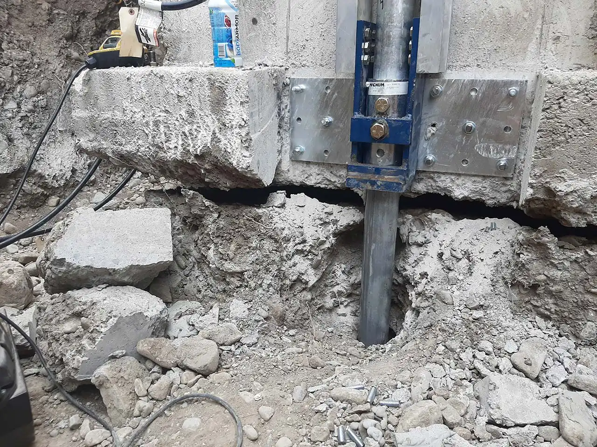
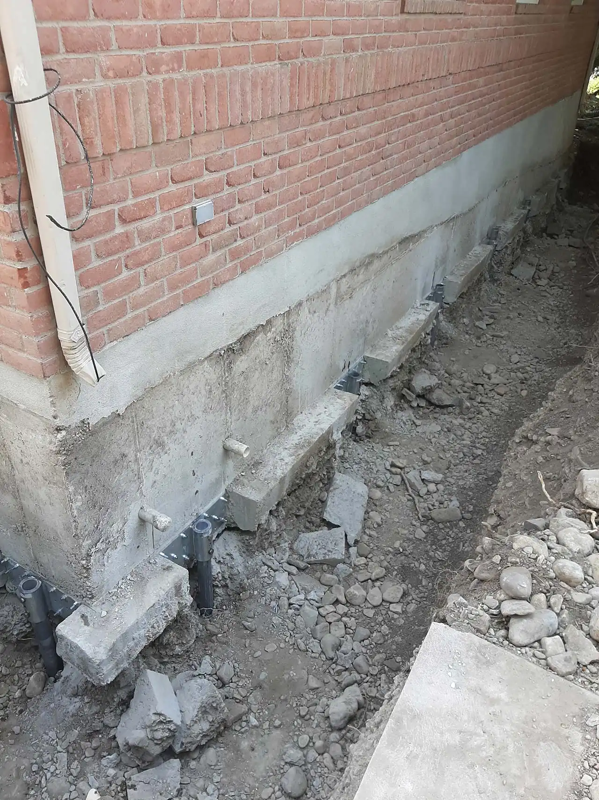
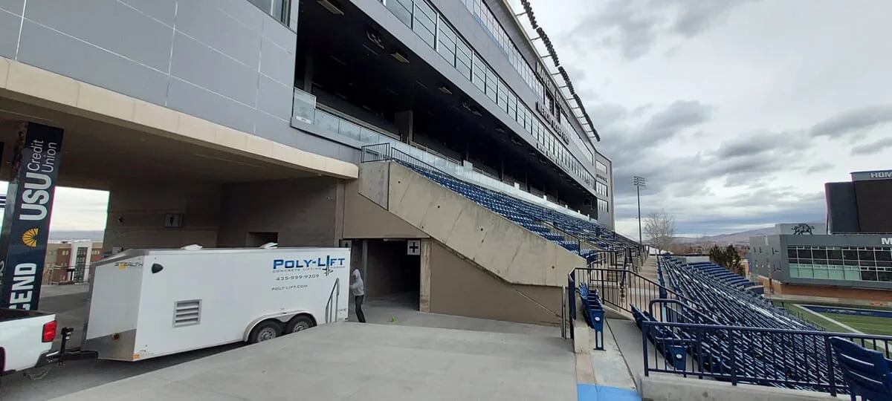

Logan · Cache Valley · Davis County
Concrete lifting in Logan, with foam, not a jackhammer.
Poly-Lift does concrete lifting in Logan and across Utah with Deep Foamjection, a polyurethane foam injected under sunken slabs. It is quicker and less expensive than replacing, and repaired areas are ready within minutes. For houses, we install push piers and helical piles.
How Deep Foamjection works
Fill the void. Lift the slab.
Concrete sinks when the base under it washes out, was never compacted properly, or heaves and settles through freeze and thaw. We drill small holes, inject foam through them, and the foam fills the void and expands, lifting the slab back toward level.
Unlike mud jacking with grout, the material is light, the holes are small and the clean-up is minimal. Press Inject foam, or drag the slider.
Our specialties
Got concrete problems? We’ve got you covered.
Concrete raisingDeep Foamjection lifts driveways, sidewalks, stairs and garage floors. Repaired areas are ready within minutes.Learn more 
Foundation repairPush piers and helical piles, with Magnum Piering, to stop a settling house and lift it back.Learn more
Concrete sealingA finish after we raise and level, against frost heave, salt and ice in winter.Learn more
Core Foam Masonry Foam Insulation®Foam-in-place insulation for concrete block walls.Learn moreCompleted project · Utah State University
Piering a campus building, bay by bay.
Push piers set along the foundation walls inside a Utah State University building, with the floor opened up to reach the footings. We have also worked at the Utah stadium and Weber State University.




A lifted garage
A garage lifted on piers.






Every time you choose to raise rather than replace, you are saving landfills from massive concrete slabs.
Questions
Straight answers.
01How much does concrete lifting cost?
Usually around 50% or less than replacing.
02How long does it take to lift concrete?
Most jobs can be done in less than 1 day and ready to use immediately.
03What causes concrete to sink or become uneven?
Bad compaction, freeze thaw from winter, poor drainage.
04Can cracked concrete be leveled?
Cracked concrete can be leveled.
05Can you live in a house during foundation repair?
Yes, you can continue to live in your home while the foundation is being repaired.
 When Is an Uneven Sidewalk a Trip Hazard? The Quarter-Inch Rule, ExplainedRead
When Is an Uneven Sidewalk a Trip Hazard? The Quarter-Inch Rule, ExplainedRead  Why Do Foundations Sink? What You Need to KnowRead
Why Do Foundations Sink? What You Need to KnowRead  A Guide to Foundation Repair CostsRead
A Guide to Foundation Repair CostsRead  A Guide to Core Foam Masonry Foam InsulationRead
A Guide to Core Foam Masonry Foam InsulationRead Free Estimate
Concrete sinking? Foundation settling? Get a free estimate.
Call the Cache location or the Weber location, Monday to Friday, 7 a.m. to 5 p.m. Most concrete lifting jobs are done in less than a day and ready to use immediately.
Free Estimate